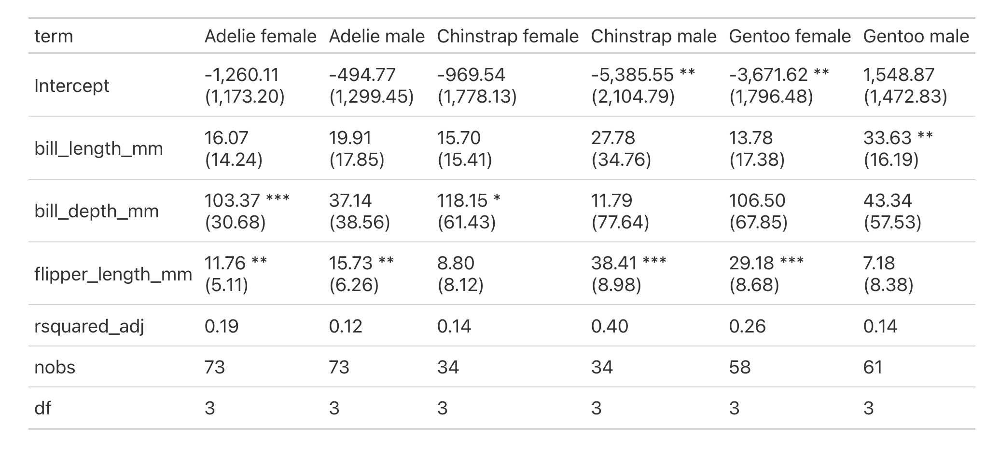

group_split, group_map, group_modify


データフレームのグループ化された処理
概要
データフレームに対して、変数を基準としたグループへの分割・関数適用・結果の統合を行います。
group_split(
data: IntoFrameT,
*group_cols: Union[str, List[str], narwhals.Expr, narwhals.selectors.Selector],
keep: bool = True,
drop_na_groups: bool = True,
sort_groups: bool = True,
to_native: bool = True,
) -> Tuple[List[IntoFrameT], IntoFrameT]
group_map(
data: IntoFrameT,
*group_cols: Union[str, List[str], narwhals.Expr, narwhals.selectors.Selector],
func: Callable[[IntoFrameT], Any],
drop_na_groups: bool = True,
sort_groups: bool = True
) -> Tuple[List[IntoFrameT], IntoFrameT]
group_modify(
data: IntoFrameT,
*group_cols: Union[str, List[str], narwhals.Expr, narwhals.selectors.Selector],
func: Callable[[IntoFrameT], Union[IntoFrameT, IntoSeriesT, int, float, bool, str, None]],
drop_na_groups: bool = True,
sort_groups: bool = True,
to_native: bool = True
) -> IntoFrameTそれぞれの関数の機能は次のとおりです。
group_split(): データフレームをグループごとのデータフレームのリストに分割しますgroup_map(): 各グループに関数を適用し、結果をリストとして返しますgroup_modify(): 各グループに関数を適用し、結果を1つのデータフレームに結合します
引数 Argument
data：IntoFrameT（必須）
入力データ。narwhals が受け入れ可能な DataFrame 互換オブジェクト
（例：pandas.DataFrame、polars.DataFrame、pyarrow.Table）を指定できます。*group_cols（str / list[str] / narwhals.Expr / narwhals.Selector）
データセットのグループ化に使用する列を指定します。指定方法は次のとおりです。- 列名（例：
"x"） - 列名のリスト（例：
["x", "y"]） - narwhals の式（
Expr）（例：nw.col("x")） - narwhals の
Selector（例：ncs.numeric()）
- 列名（例：
func：callable
データフレームを1つの引数として受け取る関数。各グループに対して個別に適用されます。
group_map():funcには任意の Python オブジェクトを返す関数を指定できます。回帰モデルの結果オブジェクトやグラフなど、表形式に変換できないオブジェクトを返す用途にも適しています。group_modify():funcの戻り値はデータフレームに変換可能なオブジェクトである必要があります。使用可能な戻り値の例は以下の通りです。
- データフレーム互換オブジェクト (
IntoFrameT) - Series 互換オブジェクト (
IntoSeriesT) - スカラー値（
int, float, bool, str） None
- データフレーム互換オブジェクト (
keep（bool, optional）
分割後の各データフレームにグループ化変数を保持するかどうか。False を指定すると、グループ化変数は削除されます。デフォルトは True です。drop_na_groups（bool, optional）
グループ化変数に欠損値を含むグループを除外するかどうか。デフォルトは True です。sort_group（bool, optional）
グループをグループ化変数でソートしてから分割するかどうか。デフォルトは True です。to_native: bool
Trueの場合、入力と同じ型のデータフレーム（e.g. pandas / polars / pyarrow）を返します。
Falseの場合、narwhals.DataFrameを返します。デフォルトはTrueで、to_native = Falseは、主にライブラリ内部での利用や、バックエンドに依存しない後続処理を行う場合を想定したオプションです。
返り値 Value
group_split(): 次の2つのフィールドを持つ NamedTuple を返します。data: 各グループに対応するデータフレームのリスト。groups: グループキー情報を保持するデータフレーム。
group_map(): 次の2つのフィールドを持つ NamedTuple を返します。mapped: 各グループにfuncを適用した結果のリスト。groups: グループキー情報を保持するデータフレーム。
group_modify():funcの結果を結合し、グループ化変数を付与した1つのデータフレームを返します。
使用例 Example
import py4stats as py4st
import pandas as pd
from palmerpenguins import load_penguins
penguins = load_penguins()group_split() はデータフレームを指定した変数で分割し、データフレームのリストに変換します。
res = py4st.group_split(penguins, 'species')
for df in res.data:
print(df.shape[0], df['species'].unique())
#> 152 ['Adelie']
#> 68 ['Chinstrap']
#> 124 ['Gentoo']group_map() は、分割したデータフレームに func で指定した関数を適用した結果を要素にもつリストを返します。
col = 'bill_length_mm'
res = py4st.group_map(
penguins, 'species', 'sex',
func = lambda df: df[col].median()
)
res.mapped
#> [np.float64(37.0),
#> np.float64(40.6),
#> np.float64(46.3),
#> np.float64(50.95),
#> np.float64(45.5),
#> np.float64(49.5)]group_modify() は、分割したデータフレームに func で指定した関数を適用した結果を1つのデータフレームに統合した結果を返します。
cols = ['bill_length_mm', 'body_mass_g']
res = py4st.group_modify(
penguins, 'species',
func = lambda df: df[cols].median()
)
print(res)
#> species name value
#> 0 Adelie bill_length_mm 38.80
#> 1 Adelie body_mass_g 3700.00
#> 2 Chinstrap bill_length_mm 49.55
#> 3 Chinstrap body_mass_g 3700.00
#> 4 Gentoo bill_length_mm 47.30
#> 5 Gentoo body_mass_g 5000.00group_modify() と py4st.median_qi() を組み合わせることで、グループ別に適用することができます。
penguins_pl = pl.from_pandas(penguins)
result = py4st.group_modify(
penguins_pl, 'species', 'sex',
func = py4st.median_qi
)
print(result.filter(pl.col('variable').str.contains('bill_len')))
#> shape: (6, 6)
#> ┌───────────┬────────┬────────────────┬────────┬───────┬───────┐
#> │ species ┆ sex ┆ variable ┆ median ┆ lower ┆ upper │
#> │ --- ┆ --- ┆ --- ┆ --- ┆ --- ┆ --- │
#> │ str ┆ str ┆ str ┆ f64 ┆ f64 ┆ f64 │
#> ╞═══════════╪════════╪════════════════╪════════╪═══════╪═══════╡
#> │ Adelie ┆ female ┆ bill_length_mm ┆ 37.0 ┆ 33.3 ┆ 41.0 │
#> │ Adelie ┆ male ┆ bill_length_mm ┆ 40.6 ┆ 35.7 ┆ 45.7 │
#> │ Chinstrap ┆ female ┆ bill_length_mm ┆ 46.3 ┆ 41.65 ┆ 54.45 │
#> │ Chinstrap ┆ male ┆ bill_length_mm ┆ 50.95 ┆ 48.75 ┆ 55.0 │
#> │ Gentoo ┆ female ┆ bill_length_mm ┆ 45.5 ┆ 41.85 ┆ 49.1 │
#> │ Gentoo ┆ male ┆ bill_length_mm ┆ 49.5 ┆ 45.1 ┆ 55.5 │
#> └───────────┴────────┴────────────────┴────────┴───────┴───────┘group_map() と smf.ols()、そして py4st.compare_ols() を組み合わせることで、次のように回帰分析の層別解析を実行することができます。
from great_tables import GT
fml = 'body_mass_g ~ bill_length_mm + bill_depth_mm + flipper_length_mm'
result = py4st.group_map(
penguins_pl, 'species', 'sex',
func = lambda df: smf.ols(fml, data = df).fit()
)
groups = result.groups.with_columns(
label = pl.concat_str(
[pl.col("species"), pl.col("sex")],
separator = " ")
)
compare_tab = py4st.compare_ols(
result.mapped, groups['label'],
digits = 2, line_break = '<br>'
)
GT(compare_tab.reset_index())
注意点 Note
これらの関数は、データフレームを変数を基準としたグループに分割した上で、その部分集合に対して個別に任意の関数を適用するという単純なもので、パフォーマンス面では必ずしも最適化されていません。したがって、下記のような pd.DataFrame.groupby() や nw.DataFrame.group_by() で実現できる範疇のシンプルな集計操作であれば、既存のメソッドを用いた方が高速なのが実情です。
diamonds = sns.load_dataset('diamonds')
diamonds_nw = nw.from_native(diamonds)
%timeit -r 10 -n 10 diamonds.groupby('cut', observed = True)['price'].mean()
#> 814 μs ± 157 μs per loop (mean ± std. dev. of 10 runs, 10 loops each)
%timeit -r 10 -n 10 diamonds_nw.group_by('cut').agg(nw.col('price').mean())
#> The slowest run took 4.80 times longer than the fastest. This could mean that an intermediate result is being cached.
#> 1.58 ms ± 1.12 ms per loop (mean ± std. dev. of 10 runs, 10 loops each)
# Py4Stats の関数
%timeit -r 10 -n 10 py4st.group_map(diamonds, 'cut', func = lambda df: df['price'].mean())
#> 9.7 ms ± 1.99 ms per loop (mean ± std. dev. of 10 runs, 10 loops each)
%timeit -r 10 -n 10 py4st.group_modify(diamonds, 'cut', func = lambda df: df['price'].mean())
#> 17.1 ms ± 4.99 ms per loop (mean ± std. dev. of 10 runs, 10 loops each)参考
本節の関数を実装するにあたり、関数名や機能について dplyr パッケージの group_split()、group_map() および group_modify() を参考にしました。